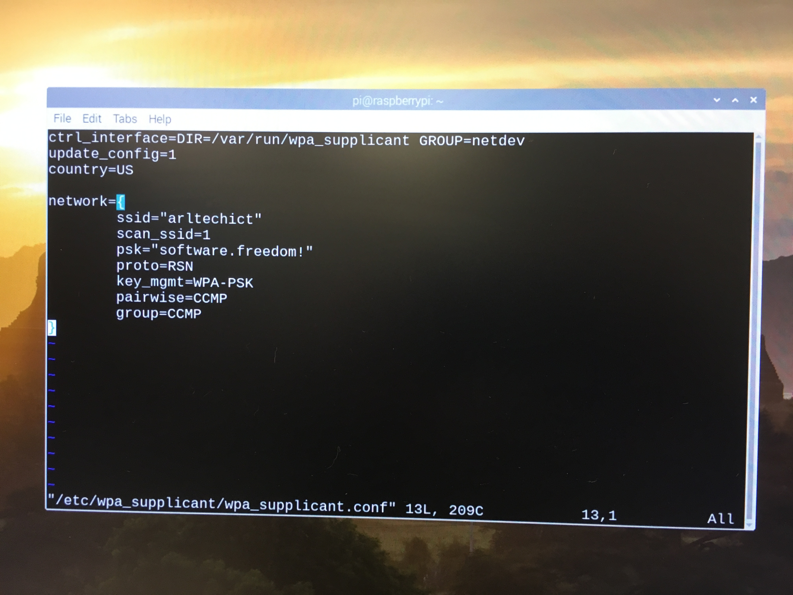

<DOCTYPE! html>
<html>
<lang="en">
<meta charset="utf-8">
<head>	
<title>Cool Code</title>
</head>
<body>
<style>
<h1>Cool Code</h1>
<ol type="1">
	<li>Enter "sudo iwlist wlan0 scanning essid arltechict" into terminal
	<li>Make sure ethernet cable is disconnected
	<li>Enter "sudo "vim or nano" /etc/wpa_supplicant/wpa_supplicant.conf" into terminal
	<li>In the wpa_supplicant.conf file enter "network={ssid="arltechict" scan_ssid=1 psk="software.freedom!" proto=RSN key_mgmt=WPA-PSK pairwise=CCMP group=CCMP}"
	<li><p>Here's what it should look like:</p>
	<li>Restart the Raspberry Pi
</ol>
</style>
</body>
</html>
